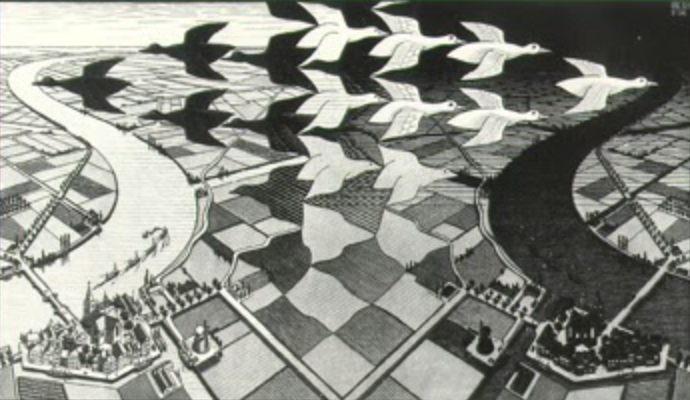

Escher produced this image in Italy from 1923 to 1935. In his extensive travels around the country,
Escher explored depictions of the landscapes, towns, and buildings he passed by. This image displays
an air of realism while still incorporating subtle bits of fantasy. The overall darkness of the image
and the strong contrast between the darker and lighter tones adds to the overall drama of the piece.
Fig 1. One of Escher's most well known pieces: Castrovalva
In one of Escher's last works from his Italian era, he depicts himself sitting in his studio in Rome in the
reflection of a reflective sphere. He holds the sphere in one of his hands as the light from the window in
his studio cascades across the room highlighting the furniture in the background and creating depth with
the shadows on his face. This work represents his fascination with reflections and how that ties into the
self which can be seen in his other works.
Fig 1. One of Escher's most well known pieces: Relativity
This was one of Escher's most popular prints which he produced over 650 over the span of his lifetime. The print
shows a rural landscape with a flock of birds flying in opposing directions in the sky. The image depicts 2 mirrored
images of a town with the left side presente as day time and the right side depicted as night time. On the fields
there are squares that transition into the birds which form a pattern towards the top of the image utilizing negative
space to create this pattern. This unique composition represents the transition from day to night and merging of light and dark.

Fig 1. One of Escher's most well known pieces: Day and Night